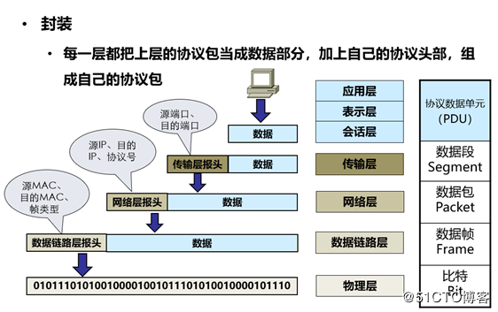
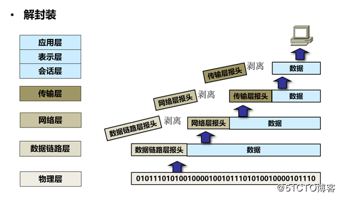

两台电脑之间数据传递过程中的封装和解封装
数据的封装
数据在发送之前会进行封装
APP头部 数据
UDP头部 APP头部 数据
IP头部 UDP头部 APP头部 数据
以太网头部 IP头部 UDP头部 APP头部 数据
就会变成比特流传输传输给对端

*总结：逐渐加头部的过程 是从应用封装到物理层
数据解封装
当服务器接收数据流量的时候 我这边会进行解分装
首先会接收比特流
IP头部 UDP头部 APP头部 数据
UDP头部 APP头部 数据
APP头部 数据
数据

*总结：逐渐去掉头部的过程 是从物理层解封装到应用层